追加情報
それでは、この配信者の輝かしい功績を見ていきましょう。
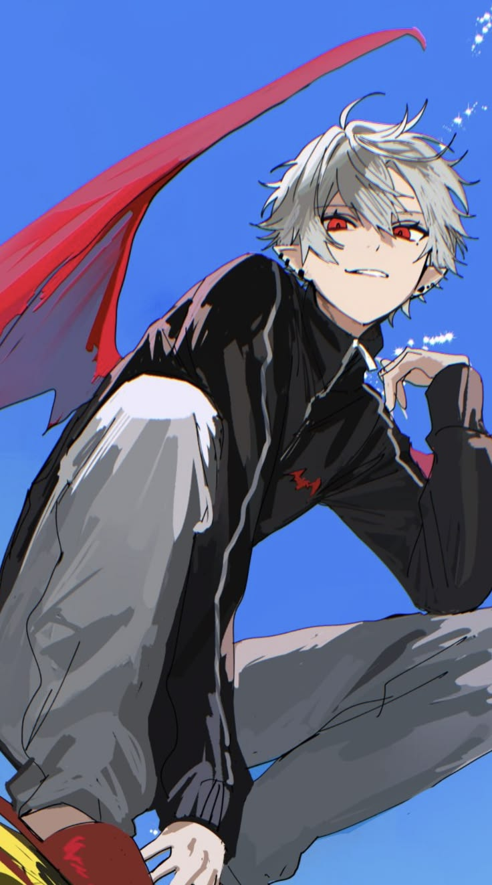
世界で初めて登録者数100万人を達成した男性VTuber
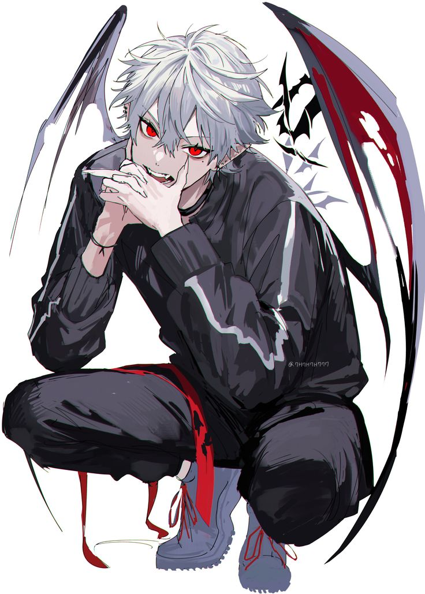
彼は、日本で初めて登録者数200万人を突破した男性バーチャルユーチューバーであり、世界で2番目に登録者数200万人を達成した男性VTuberである。
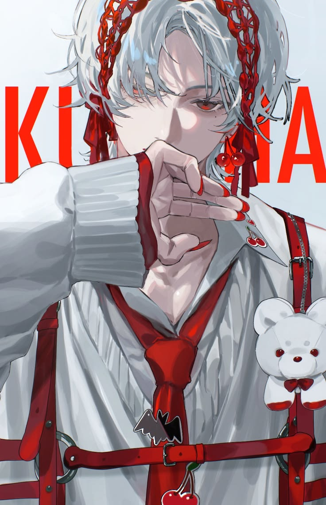
カバー曲「KING」はYouTubeで5876万回再生されている。
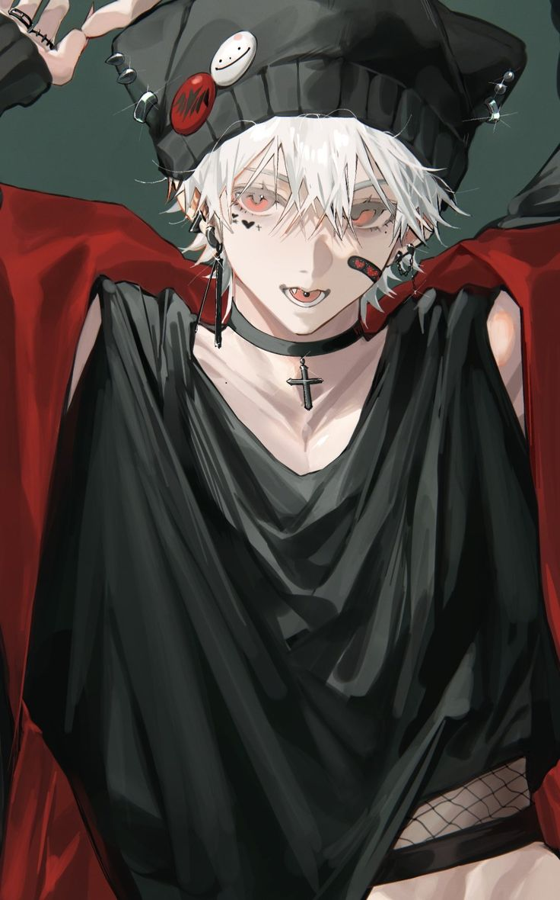
彼は数々のeスポーツ招待トーナメントに参加し、優勝経験もあるため、日本のVTuberコミュニティとeスポーツコミュニティ間の交流を促進する上で重要な人物である。
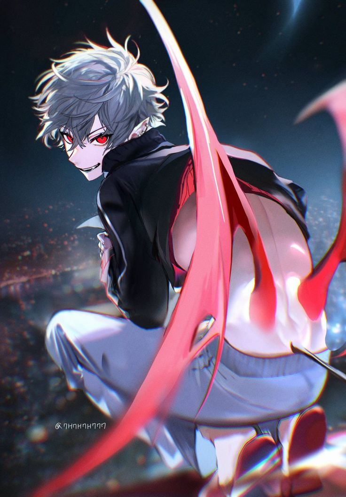
同チャンネルは、世界のYouTubeチャンネルの年間スポンサーシップ（スーパーチャット）支出ランキングで何度もトップ10入りを果たしており、非常に熱心で活発なファン層を抱えている。
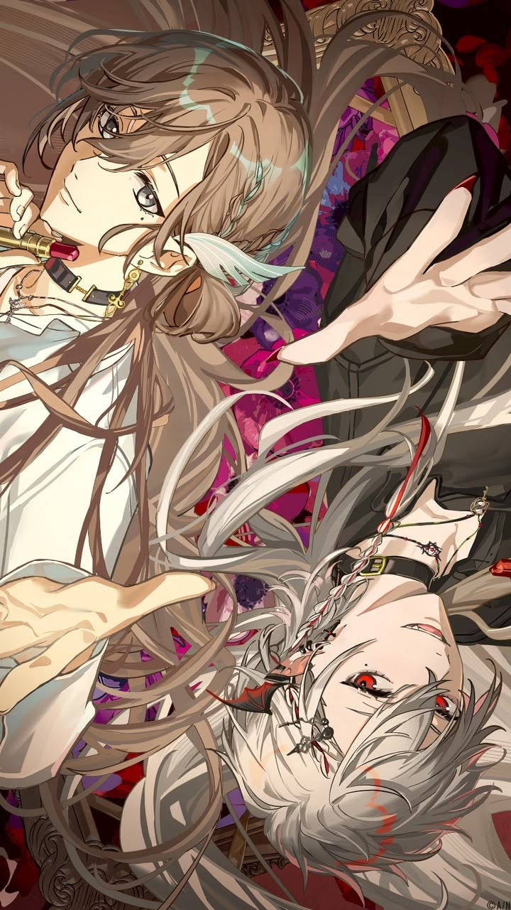
2024年5月、彼らは日本の音楽家にとっての聖地である日本武道館で、初の対面式ライブコンサートを成功裏に開催した。
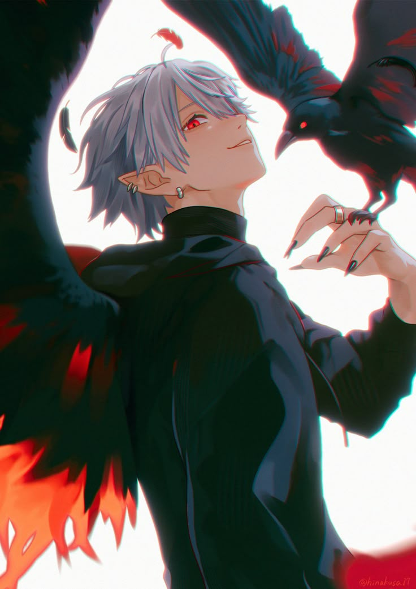
2021年、彼らはユニバーサルミュージックジャパンを通じてメジャーデビューを発表し、2022年には初のミニアルバム「Sweet Bite」をリリースし、非常に高い評価を得た。
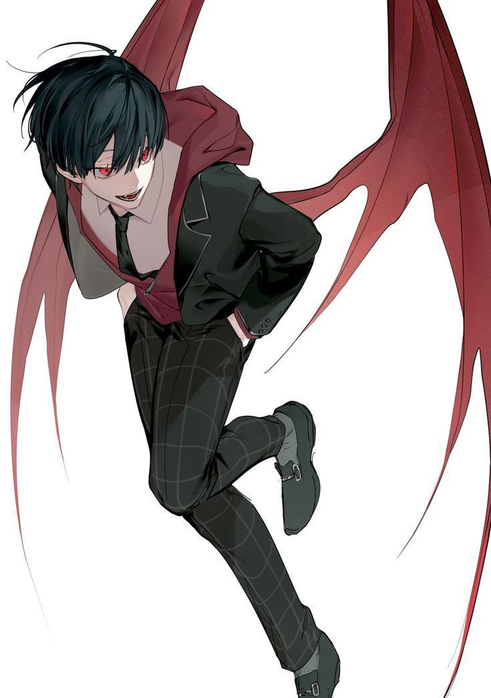
彼はゲーム実況を10時間以上、時には徹夜で配信することが多い。彼のファンは（冗談交じりに彼を「不眠の吸血鬼」と呼ぶことが多い）、彼の話し方は日本の若い世代のインターネットスラングに大きな影響を与えている。
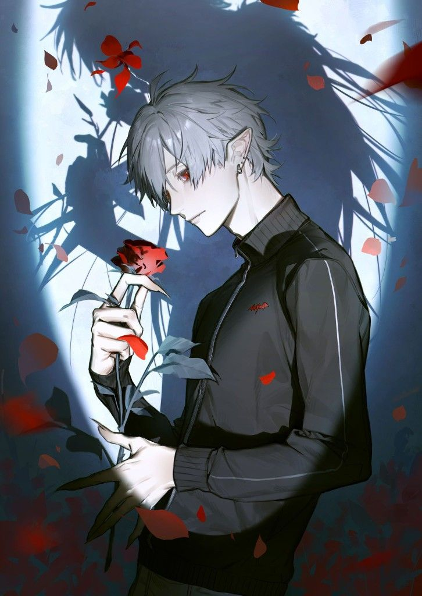
彼はかつてCRカップで優勝した経験があり、冷静な采配と重要な局面での爆発的なシュートは、プロ選手たちから高い評価を得ている。
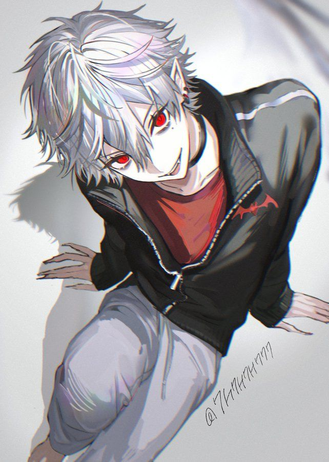
2018年ににじさんじが主催した「大乱闘スマッシュブラザーズ」トーナメントにおいて、和成は卓越したスキルと心理戦を駆使し、あらゆる障害を乗り越えて初代チャンピオンの座を獲得した。この大会をきっかけに彼の人気は急上昇し、にじさんじの「ゲーム界の強豪」としての地位を確固たるものにした。
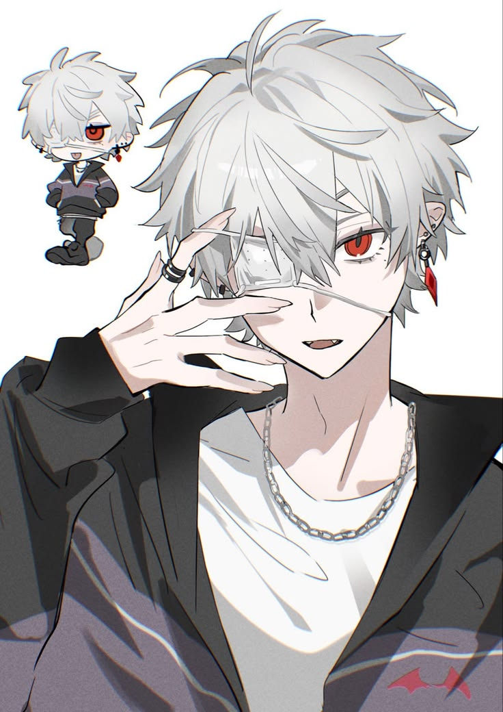
2021年Zepp Hanedaが初のオフライン単独イベント＆コンサート「Scarlet Invitation」を開催し、チケットは即完売となった。ステージ上では、普段のライブ配信での怠惰で傲慢なイメージとは全く異なる、クールでスタイリッシュな歌とダンスを披露し、多くのファンを魅了した。
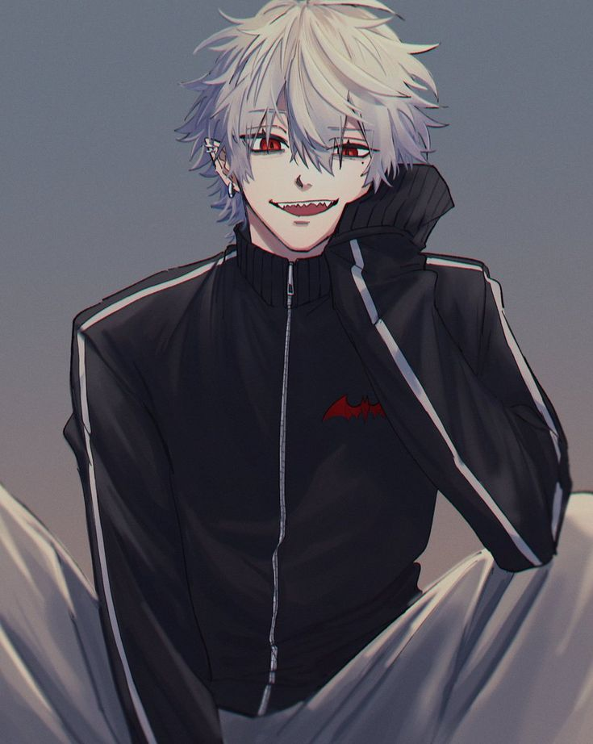
高潔な吸血鬼として描かれているにもかかわらず、葛葉はしばしば小学生のような性格を見せる。野菜（特にピーマン）が嫌いで、ジャンクフードが大好き、褒められると恥ずかしがってどもってしまう。普段は「何の役にも立たないが、ゲームや歌を歌う時は天才」というこのギャップこそが、彼の最大の魅力なのだ。